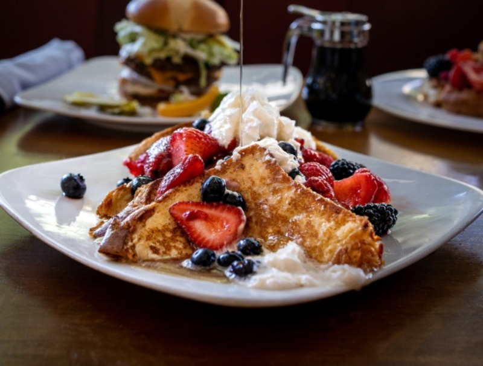

French toast, a household classic!
Ingredients
- 2/3 cup milk
- 2 large eggs
- 1 teaspoon vanilla extract (Optional)
- 1/4 teaspoon ground cinnamon (Optional)
- salt to taste
- 6 thick slices of bread
- 1 tablespoon unsalted butter, or more as needed
Steps
-
Whisk milk, eggs, vanilla, cinnamon, and salt together in a
shallow bowl.
-
Lightly butter a griddle and heat over medium-high heat.
-
Dunk bread in the egg mixture, soaking both sides. Transfer to the
hot skillet and cook until golden, 3 to 4 minutes per side. serve
hot.
Once done feel free to put any fruit or topping you'd like on
your french toast. Personally, I prefer fruits with whipped
cream and syrup on mine.
Return to top
Return to main page